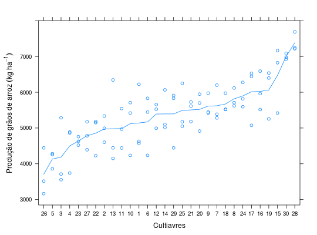

Dados de um estudo sobre competição de cultivares e linhagens de arroz irrigado quanto a produtividade. O experimento foi conduzido em ensaio em reticulado retangular 5 \(\times\) 6 (blocos de tamanho 5, 6 blocos por repetição), com três repetições.
Um data.frame com 90 observações e 3 variáveis, em que
reptblococultprodZIMMERMANN (2004), Tabela 7.4, pág. 140.
library(lattice) data(ZimmermannTb7.4)#> Warning: data set ‘ZimmermannTb7.4’ not foundstr(ZimmermannTb7.4)#> 'data.frame': 90 obs. of 4 variables: #> $ rept: Factor w/ 3 levels "X","Y","Z": 1 1 1 1 1 1 1 1 1 1 ... #> $ bloc: Factor w/ 18 levels "X1","X2","X3",..: 1 1 1 1 1 2 2 2 2 2 ... #> $ cult: Factor w/ 30 levels "1","2","3","4",..: 5 1 4 3 2 10 9 6 8 7 ... #> $ prod: num 4256 4628 4890 3713 4602 ...xtabs(~bloc + rept, data = ZimmermannTb7.4)#> rept #> bloc X Y Z #> X1 5 0 0 #> X2 5 0 0 #> X3 5 0 0 #> X4 5 0 0 #> X5 5 0 0 #> X6 5 0 0 #> Y1 0 5 0 #> Y2 0 5 0 #> Y3 0 5 0 #> Y4 0 5 0 #> Y5 0 5 0 #> Y6 0 5 0 #> Z1 0 0 5 #> Z2 0 0 5 #> Z3 0 0 5 #> Z4 0 0 5 #> Z5 0 0 5 #> Z6 0 0 5xtabs(~cult + rept, data = ZimmermannTb7.4)#> rept #> cult X Y Z #> 1 1 1 1 #> 2 1 1 1 #> 3 1 1 1 #> 4 1 1 1 #> 5 1 1 1 #> 6 1 1 1 #> 7 1 1 1 #> 8 1 1 1 #> 9 1 1 1 #> 10 1 1 1 #> 11 1 1 1 #> 12 1 1 1 #> 13 1 1 1 #> 14 1 1 1 #> 15 1 1 1 #> 16 1 1 1 #> 17 1 1 1 #> 18 1 1 1 #> 19 1 1 1 #> 20 1 1 1 #> 21 1 1 1 #> 22 1 1 1 #> 23 1 1 1 #> 24 1 1 1 #> 25 1 1 1 #> 26 1 1 1 #> 27 1 1 1 #> 28 1 1 1 #> 29 1 1 1 #> 30 1 1 1xyplot(prod ~ reorder(cult, prod), data = ZimmermannTb7.4, type = c("p", "a"), xlab = "Cultiavres", ylab = expression("Produção de grãos de arroz"~(kg~ha^{-1})))